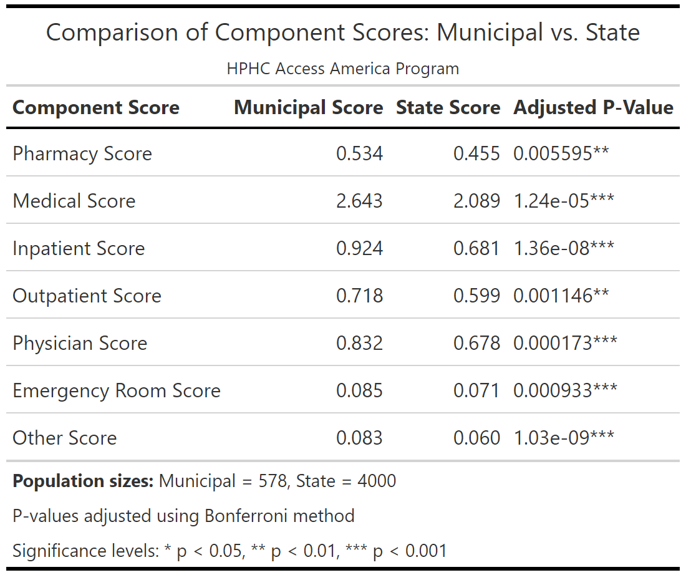
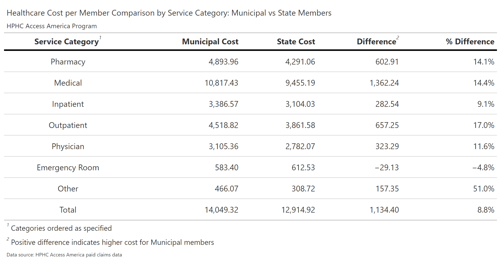
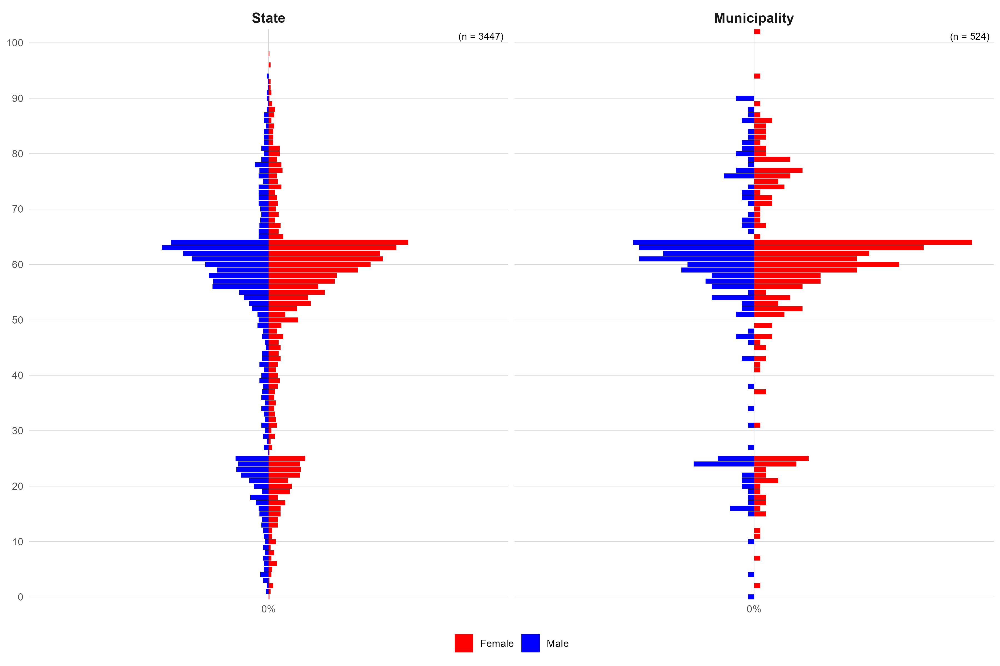
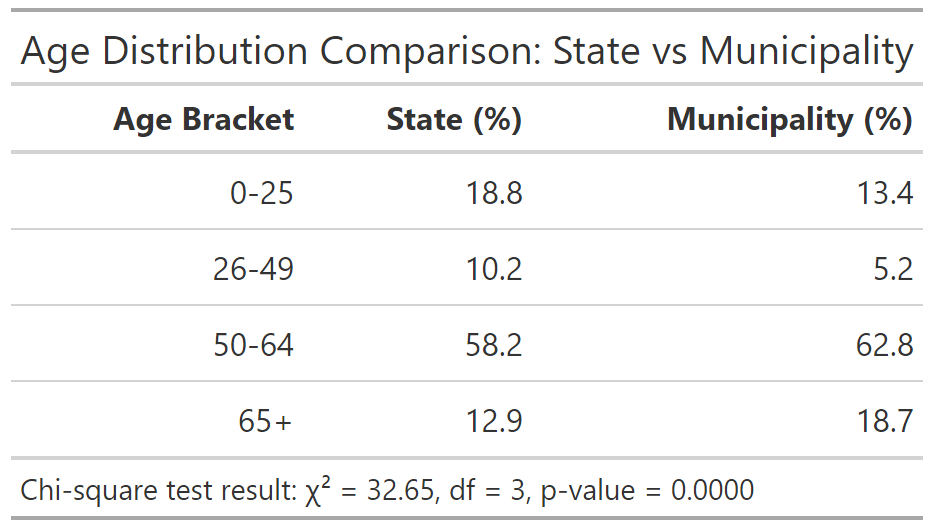
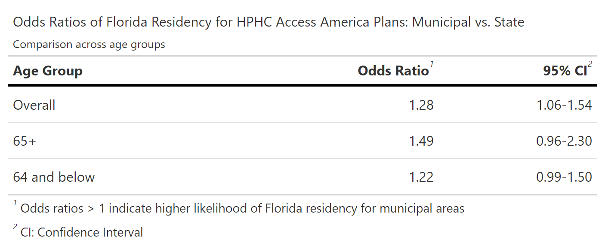
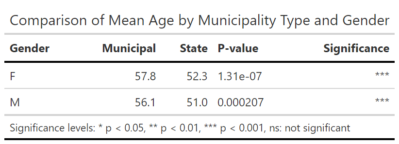
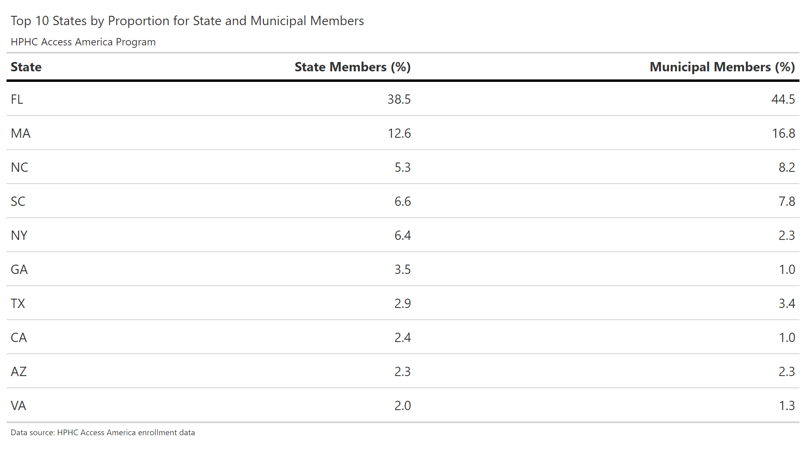

#Analysis of MARA scores
# Load libraries
library(tidyverse)
library(gt)
library(BSDA)
# Load the df_mara_clean from the data file
df_mara_clean <- read_csv("data/df_mara_clean.csv")
# Compare component scores of state vs muni
# Using Welch's t-test with Bonferroni correction
component_scores <- c("rx_score", "med_score", "ip_score", "op_score", "phy_score", "er_score", "oth_score")
results_df <- tibble(Component = component_scores) %>%
mutate(
Muni_Mean = map_dbl(Component, ~df_mara_clean[[.x]][df_mara_clean$Program == "Muni"]),
State_Mean = map_dbl(Component, ~df_mara_clean[[.x]][df_mara_clean$Program == "State"]),
Muni_N = df_mara_clean$pat_count[df_mara_clean$Program == "Muni"],
State_N = df_mara_clean$pat_count[df_mara_clean$Program == "State"],
Muni_SD = Muni_Mean, # Conservative estimate
State_SD = State_Mean # Conservative estimate
) %>%
rowwise() %>%
mutate(
Test_Result = list(tsum.test(
mean.x = Muni_Mean, s.x = Muni_SD, n.x = Muni_N,
mean.y = State_Mean, s.y = State_SD, n.y = State_N,
alternative = "two.sided", var.equal = FALSE
)),
T_Statistic = Test_Result$statistic,
DF = Test_Result$parameter,
P_Value = Test_Result$p.value
) %>%
ungroup() %>%
select(-Test_Result) %>%
mutate(Adjusted_P_Value = p.adjust(P_Value, method = "bonferroni"))
# The rest of your code remains the same
component_names <- c(
"rx_score" = "Pharmacy Score",
"med_score" = "Medical Score",
"ip_score" = "Inpatient Score",
"op_score" = "Outpatient Score",
"phy_score" = "Physician Score",
"er_score" = "Emergency Room Score",
"oth_score" = "Other Score"
)
clean_table <- results_df %>%
select(Component, Muni_Mean, State_Mean, Adjusted_P_Value) %>%
mutate(
Component = component_names[Component],
Muni_Mean = round(Muni_Mean, 3),
State_Mean = round(State_Mean, 3),
Significance = case_when(
Adjusted_P_Value < 0.001 ~ "***",
Adjusted_P_Value < 0.01 ~ "**",
Adjusted_P_Value < 0.05 ~ "*",
TRUE ~ ""
),
Adjusted_P_Value = format.pval(Adjusted_P_Value, digits = 3)
) %>%
rename(
"Component Score" = Component,
"Municipal Score" = Muni_Mean,
"State Score" = State_Mean,
"Adjusted P-Value" = Adjusted_P_Value
)
final_table <- clean_table %>%
gt() %>%
tab_header(
title = "Comparison of Component Scores: Municipal vs. State",
subtitle = "HPHC Access America Program"
) %>%
fmt_number(
columns = c("Municipal Score", "State Score"),
decimals = 3
) %>%
text_transform(
locations = cells_body(columns = "Adjusted P-Value"),
fn = function(x) {
ifelse(x %in% c("< 0.001", "< 0.01", "< 0.05"),
paste0("**", x, "**"),
x)
}
) %>%
cols_merge(
columns = c("Adjusted P-Value", "Significance"),
pattern = "{1}{2}"
) %>%
tab_source_note(
source_note = md("**Population sizes:** Municipal = 578, State = 4000")
) %>%
tab_source_note(
source_note = "P-values adjusted using Bonferroni method"
) %>%
tab_source_note(
source_note = md("Significance levels: \\* p < 0.05, \\*\\* p < 0.01, \\*\\*\\* p < 0.001")
) %>%
tab_style(
style = list(
cell_text(weight = "bold")
),
locations = cells_column_labels()
) %>%
tab_options(
table.border.top.color = "black",
table.border.bottom.color = "black",
column_labels.border.bottom.color = "black",
table.border.top.width = px(3),
table.border.bottom.width = px(3),
column_labels.border.bottom.width = px(2)
)
gtsave(
final_table,
filename = "component_scores_comparison.png",
path = "images"
)Analyzing Healthcare Cost Disparities Between State and Municipal Members in Massachusetts: Insights from the GIC’s HPHC Access America Plan
Abstract
Healthcare affordability remains a critical challenge in the United States, with state employee health plans (SEHPs) facing escalating costs that outpace income growth. This study examines disparities in healthcare costs and utilization patterns between municipal and state members enrolled in the Harvard Pilgrim Health Care (HPHC) Access America plan, managed by the Massachusetts Group Insurance Commission (GIC). Using medical claims data from fiscal year 2024, we analyzed demographic and geographic factors, MARA risk scores, and service-specific expenditures.
Municipal members exhibited significantly higher MARA component scores across all categories, suggesting greater healthcare needs and risk-adjusted costs. Total healthcare costs per member were 8.8% higher for municipal members, driven by elevated expenditures in outpatient, pharmacy, and medical services. Demographic differences revealed municipal members were older, with a higher concentration in the 50–64 and 65+ age brackets. Geographic analysis showed a disproportionate number of municipal members residing in high-cost regions like Florida, where municipal members were 28% more likely to reside compared to state members.
These findings underscore the need for targeted cost-containment strategies, including refined risk adjustment models and interventions focusing on high-cost services and geographic price variations.
Introduction
Healthcare affordability remains a critical challenge in the United States, which spends a larger proportion of its GDP on healthcare than any other OECD nation (Blumenthal et al., 2024). Projections indicate that healthcare spending will continue to outpace GDP growth from 2023 to 2032, further exacerbating existing financial pressures (Fiore et al., 2024). While increased healthcare spending can partly be attributed to broader insurance coverage and improved access to care, this rising demand presents significant challenges. The escalating costs threaten the financial sustainability of both public and private insurance programs, risking reduced access to care and imposing a growing burden on individuals, employers, and government budgets (Kaiser Family Foundation, 2024; Emanuel et al., 2017).
In this context, state employee health plans (SEHPs), some of the largest purchasers of commercial insurance in their states, illustrate how public payers are grappling with rising costs. Despite the considerable purchasing power SEHPs wield, often exceeding that of private employers, this has proven insufficient to fully mitigate rising healthcare expenditures. Healthcare affordability remains a pressing issue in Massachusetts, particularly for the Group Insurance Commission (GIC). The GIC, which oversees health insurance for state employees, municipal employees, retirees, and their dependents, is a self-insured entity managing over $4 billion annually. The Health Policy Commission found that healthcare spending in Massachusetts grew by 5.8% in 2022, significantly outpacing the growth in household incomes. This spending increase was primarily driven by higher prices, not increased utilization, reflecting a broader national issue. The challenge is particularly acute in Massachusetts due to its concentration of high-cost academic health systems (Massachusetts Health Policy Commission, 2023).
Its role underscores the importance of balancing affordability with comprehensive coverage in public health policy (Chernew et al., 2004). A prevailing assumption within the GIC is that municipal employees incur higher healthcare costs than state employees, driven by adverse selection, where municipalities may opt into GIC coverage to mitigate higher healthcare risks within their populations (Rothschild & Stiglitz, 1976). Such an assumption necessitates rigorous investigation to inform policy and financial strategies effectively. Among the GIC’s health plans, the Harvard Pilgrim Health Care (HPHC) Access America plan presents a particularly compelling case; municipal members have a MARA risk score of 3.18 compared to 2.54 for state members. This difference indicates that municipal members are expected to incur approximately 25% higher healthcare costs on average than state members, given their demographic and medical risk profiles. Such a disparity suggests significant variations in underlying health conditions or utilization patterns between these groups, warranting deeper investigation. While the MARA score is a proprietary product of Milliman, these risk scores estimate expected healthcare costs by incorporating demographics and medical claims data (Milliman, 2024).
This study investigates the factors underpinning the observed disparities in risk scores and associated healthcare costs for members of the HPHC Access America plan. Specifically, it addresses three key questions:
How do healthcare costs differ between state and municipal members enrolled in the plan, and how do these variations align with MARA scores?
What demographic factors, including age, gender, and geographic distribution, contribute to the observed differences?
Are there disparities in healthcare utilization patterns, such as inpatient and outpatient services or prescription drug use, between the two groups?
By leveraging medical claims data from fiscal year 2024, this analysis aims to disentangle the complex interplay of demographic and behavioral factors driving these differences. The findings will not only enhance the GIC’s understanding of its member population but also inform targeted interventions to optimize the affordability and sustainability of its plans (Berwick et al., 2008).
Methods
Study Population
The study population comprised all members enrolled in the HPHC Access America plan during fiscal year 2024 in the GIC. Members were stratified into two groups: state employees and municipal employees. Inclusion criteria required continuous enrollment during the study period and incurred claims. Members with incomplete claims or demographic data were excluded.
Data Sources
The primary data set used in this analysis was the medical claims data managed by Milliman under contract with the Group Insurance Commission (GIC). This data set contains detailed claims data for fiscal year 2024 (July 2023–June 2024), including inpatient, outpatient, and prescription drug claims for members enrolled in the Harvard Pilgrim Health Care (HPHC) Access America plan. The data was retrieved via structured queries (SQL) and pre-processed to create a tidy data set for analysis using the tidyverse suite in R.
Additionally, MARA (Milliman Advanced Risk Adjuster) scores were separately calculated and provided by Milliman consultants. These scores, which estimate expected healthcare costs based on demographic and medical risk factors, were reported independently to GIC staff and incorporated into the analysis.
The study also utilized supplementary demographic data, including age, gender, and geographic information, from GIC records. The data wrangling process is described in the Supplementary Methods section and detailed in the wrangle.R file.
Differences in MARA Scores
To analyze differences in MARA scores between state and municipal members, a Welch’s t-test (Welch, 1947) with Bonferroni corrections (Dunn, 1961) for multiple comparisons was conducted. The analysis compared seven MARA component scores: pharmacy, medical, inpatient, outpatient, physician, emergency room, and other scores. The MARA data set was pre-processed to standardize component scores per member for comparability across categories (Milliman, 2024).
The test accounted for unequal variances and sample sizes between groups. Municipal and state means, standard deviations, and sample sizes for each component were calculated using the dplyr and purrr packages from the tidyverse suite (Wickham et al., 2019). A Bonferroni correction was used to control for Type I error. Data visualization and result presentation were conducted using the gt package for table formatting (Iannone et al., 2021). Results were summarized in a formatted table, with significant findings highlighted according to standard significance thresholds (p < 0.05, p < 0.01, p < 0.001).
Differences in Healthcare Costs by Service Category
The analysis compared healthcare costs per member for municipal and state employees across various service categories. Costs were divided into categories such as pharmacy, medical, inpatient, outpatient, physician, emergency room, and other services, along with a total cost category. Data were pre-processed to calculate the total cost for each category by municipality type in wrangle.R.
To compare these costs, the difference and percentage difference between municipal and state members were calculated for each category. A formatted table summarizing the costs, differences, and percentage differences was created using the gt package. Positive differences indicated higher costs for municipal members.
library(tidyverse)
library(gt)
# Load the data
df_paid_clean <- read_csv("data/df_paid_clean.csv", show_col_types = FALSE)
# Define the desired order of categories and their display names
category_order <- c("pharmacy", "medical", "inpatient", "outpatient", "physician", "emergency_room", "other", "total")
category_names <- c("Pharmacy", "Medical", "Inpatient", "Outpatient", "Physician", "Emergency Room", "Other", "Total")
# Reshape the data for comparison and order categories
cost_comparison <- df_paid_clean %>%
pivot_wider(names_from = municipality_type, values_from = paid) %>%
mutate(
difference = municipal - state,
percent_difference = (difference / state) * 100, # This is the correct calculation
component = factor(component, levels = category_order, ordered = TRUE)
) %>%
arrange(component)
# Create the comparison table
cost_comparison_table <- cost_comparison %>%
gt() %>%
tab_header(
title = "Healthcare Cost per Member Comparison by Service Category: Municipal vs State Members",
subtitle = "HPHC Access America Program"
) %>%
cols_label(
component = "Service Category",
municipal = "Municipal Cost",
state = "State Cost",
difference = "Difference",
percent_difference = "% Difference"
) %>%
fmt_number(
columns = c(municipal, state, difference),
decimals = 2
) %>%
fmt_number( # Changed from fmt_percent to fmt_number
columns = percent_difference,
decimals = 1,
pattern = "{x}%" # Added percentage sign
) %>%
tab_style(
style = cell_text(weight = "bold"),
locations = cells_column_labels()
) %>%
tab_style(
style = cell_borders(sides = "bottom", weight = px(3)),
locations = cells_column_labels()
) %>%
tab_options(
table.border.top.style = "hidden",
table.border.bottom.style = "hidden",
column_labels.border.bottom.width = 2,
column_labels.border.bottom.color = "black",
table.width = pct(100),
data_row.padding = px(10),
source_notes.font.size = 10,
heading.title.font.size = 16,
heading.subtitle.font.size = 13,
heading.align = "left"
) %>%
tab_source_note(
source_note = "Data source: HPHC Access America paid claims data"
) %>%
tab_footnote(
footnote = "Positive difference indicates higher cost for Municipal members",
locations = cells_column_labels(columns = difference)
) %>%
tab_footnote(
footnote = "Categories ordered as specified",
locations = cells_column_labels(columns = component)
) %>%
text_transform(
locations = cells_body(columns = component),
fn = function(x) {
category_names[match(x, category_order)]
}
)
# Save the table as an image
gtsave(cost_comparison_table, filename = "images/healthcare_cost_comparison_table.png", expand = 10)Demographic Differences
Age and Gender
Difference in Age by Gender
A t-test was performed to compare mean ages between state and municipal members within each gender category. The analysis used cleaned demographic data that included age, gender, and municipality type. Mean ages were calculated separately for state and municipal members, and the t-test was used to assess whether differences in mean ages were statistically significant. Results, including p-values and significance levels, were summarized in a formatted table and visualized using the gt package in R.
library(tidyverse)
library(gt)
library(webshot2)
library(broom)
# Load the df_demo_clean from the data file
df_demo_clean <- read_csv("data/df_demo_clean.csv")
# Perform t-tests
t_test_results <- df_demo_clean %>%
group_by(gender) %>%
summarise(
t_test = list(t.test(age ~ municipality_type)),
.groups = "drop"
) %>%
mutate(t_test_tidy = map(t_test, tidy)) %>%
unnest(t_test_tidy) %>%
select(gender, p.value)
# Calculate mean age by municipality_type and gender
age_summary <- df_demo_clean %>%
group_by(municipality_type, gender) %>%
summarise(
mean_age = mean(age, na.rm = TRUE),
.groups = "drop"
) %>%
pivot_wider(names_from = municipality_type, values_from = mean_age) %>%
left_join(t_test_results, by = "gender") %>%
mutate(
across(c(municipal, state), ~round(., 1)),
p.value = format.pval(p.value, digits = 3),
significance = case_when(
as.numeric(p.value) < 0.001 ~ "***",
as.numeric(p.value) < 0.01 ~ "**",
as.numeric(p.value) < 0.05 ~ "*",
TRUE ~ "ns"
)
)
age_summary_table <- age_summary %>%
gt() %>%
cols_label(
gender = "Gender",
municipal = "Municipal",
state = "State",
p.value = "P-value",
significance = "Significance"
) %>%
tab_style(
style = cell_borders(
sides = "bottom",
color = "black",
weight = px(1)
),
locations = cells_column_labels()
) %>%
tab_style(
style = cell_text(weight = "bold"),
locations = cells_column_labels()
) %>%
tab_options(
table.border.top.color = "white",
table.border.bottom.color = "black",
column_labels.border.bottom.color = "black",
column_labels.border.bottom.width = px(2),
table.font.size = 12,
data_row.padding = px(5)
) %>%
tab_header(
title = "Comparison of Mean Age by Municipality Type and Gender"
) %>%
tab_source_note(
source_note = md("Significance levels: * p < 0.05, ** p < 0.01, *** p < 0.001, ns: not significant")
)
# Save the table as an image in the images directory
gtsave(age_summary_table, filename = "age_summary_table.png", path = "images")Age Distribution by Gender and Municipality Type
To examine the distribution of ages across genders and municipality types, a population pyramid visualization was created. Age-specific membership counts were converted into percentages within each municipality type and stratified by gender. Negative percentages were used to represent male members, and positive percentages represented female members. The plot was created using ggplot2, with facets for state and municipal populations. Total population sizes were included as labels in each facet (Wickham, 2016).
library(tidyverse)
library(scales)
# Load the data
df_demo_clean <- read_csv("data/df_demo_clean.csv", show_col_types = FALSE)
# Calculate percentages for each age
df_summary <- df_demo_clean %>%
group_by(municipality_type, gender, age) %>%
summarise(count = n(), .groups = "drop") %>%
group_by(municipality_type) %>%
mutate(percentage = count / sum(count) * 100) %>%
ungroup() %>%
mutate(
percentage = ifelse(gender == "M", -percentage, percentage),
municipality_type = factor(municipality_type, levels = c("state", "municipal"))
)
# Calculate total counts for labels
total_counts <- df_demo_clean %>%
group_by(municipality_type) %>%
summarise(total = n()) %>%
mutate(municipality_type = factor(municipality_type, levels = c("state", "municipal")))
# Create the plot
p <- ggplot(df_summary, aes(x = age, y = percentage, fill = gender)) +
geom_bar(stat = "identity") +
facet_wrap(~ municipality_type, scales = "free_x", labeller = as_labeller(c(municipal = "Municipality", state = "State"))) +
coord_flip() +
scale_fill_manual(values = c("M" = "blue", "F" = "red"), labels = c("M" = "Male", "F" = "Female")) +
scale_y_continuous(
labels = function(x) paste0(abs(x), "%"),
limits = c(-max(abs(df_summary$percentage)), max(abs(df_summary$percentage))),
breaks = seq(-40, 40, by = 20)
) +
scale_x_continuous(breaks = seq(0, 100, by = 10), expand = c(0, 0)) +
theme_minimal() +
theme(
strip.text = element_text(size = 12, face = "bold"),
axis.title = element_blank(),
panel.grid.major = element_line(color = "lightgray", linewidth = 0.2),
panel.grid.minor = element_blank(),
axis.text.x = element_text(angle = 0, hjust = 0.5),
plot.title = element_blank(),
plot.subtitle = element_blank(),
legend.position = "bottom",
legend.title = element_blank()
)
# Add total count labels to each facet
p <- p + geom_text(
data = total_counts,
aes(x = Inf, y = Inf, label = sprintf("(n = %d)", total)),
hjust = 1.1, vjust = 1.5, size = 3,
inherit.aes = FALSE
)
# Save the plot
ggsave("images/enrollment_by_state_muni.png", p, width = 12, height = 8, dpi = 300)Age Bracket Distribution and Chi-Square Test
Members were categorized into four age brackets (0–25, 26–49, 50–64, and 65+). The age brackets were selected to reflect meaningful groupings within the HPHC Access America plan membership. Members aged 0–25 were categorized as dependents, as they are typically covered under their parent’s insurance policies. The 65+ bracket comprises non-Medicare-eligible members, as the HPHC Access America plan is a non-Medicare insurance plan. Non-Medicare eligibility for these members is primarily due to their continued employment or specific employer-based eligibility criteria. Additionally, certain retirees may remain non-Medicare-eligible due a historical exceptions, the “continuing employment exception” applicable to some long-serving Massachusetts state employees hired before April 1, 1986, who did not contribute to Medicare during their employment (SSA, 2024).
The percentage distribution of members within each age bracket was calculated for state and municipal members. A chi-square test was performed to assess whether age bracket distributions differed significantly between the two groups (Pearson, 1900). Results of the chi-square test, including the test statistic, degrees of freedom, and p-value, were included as a source note in the summary table. The table, created using the gt package, displayed the percentage distribution of age brackets for state and municipal members.
#Age bracket distributions
library(tidyverse)
library(gt)
library(stats)
# Load the data
df_demo_clean <- read_csv("data/df_demo_clean.csv", show_col_types = FALSE)
# Create age brackets
df_demo_clean <- df_demo_clean %>%
mutate(age_bracket = case_when(
age <= 25 ~ "0-25",
age <= 49 ~ "26-49",
age <= 64 ~ "50-64",
TRUE ~ "65+"
))
# Calculate percentages for each age bracket and municipality type
age_distribution <- df_demo_clean %>%
group_by(municipality_type, age_bracket) %>%
summarise(count = n(), .groups = "drop") %>%
group_by(municipality_type) %>%
mutate(percentage = count / sum(count) * 100) %>%
pivot_wider(
names_from = municipality_type,
values_from = c(count, percentage),
names_glue = "{municipality_type}_{.value}"
) %>%
mutate(
state_percentage = round(state_percentage, 1),
municipal_percentage = round(municipal_percentage, 1)
)
# Perform chi-square test
chi_square_data <- df_demo_clean %>%
group_by(municipality_type, age_bracket) %>%
summarise(count = n(), .groups = "drop") %>%
pivot_wider(names_from = municipality_type, values_from = count)
chi_square_result <- chisq.test(chi_square_data[, c("state", "municipal")])
# Create the table
age_distribution_table <- age_distribution %>%
select(age_bracket, state_percentage, municipal_percentage) %>%
gt() %>%
tab_header(
title = "Age Distribution Comparison: State vs Municipality"
) %>%
cols_label(
age_bracket = "Age Bracket",
state_percentage = "State (%)",
municipal_percentage = "Municipality (%)"
) %>%
tab_source_note(
source_note = sprintf(
"Chi-square test result: χ² = %.2f, df = %d, p-value = %.4f",
chi_square_result$statistic,
chi_square_result$parameter,
chi_square_result$p.value
)
) %>%
tab_style(
style = cell_text(weight = "bold"),
locations = cells_column_labels()
) %>%
fmt_number(
columns = c(state_percentage, municipal_percentage),
decimals = 1
)
# Save the table as an image
gtsave(age_distribution_table, "images/age_distribution_table.png")State of Residence
Distribution of State Membership
To analyze the distribution of state residency among members, the proportions of members residing in different states were calculated separately for state and municipal employees. The top 10 states with the highest proportions of members were identified for each group. Proportions were calculated by dividing the number of members residing in each state by the total membership within each municipality type. The results were summarized in a formatted table using the gt package. This table highlighted the states with the largest membership proportions for state and municipal groups.
library(tidyverse)
library(gt)
# Load the data
df_demo_clean <- read_csv("data/df_demo_clean.csv", show_col_types = FALSE)
# Calculate state distribution and proportions for each municipality type
state_prop <- df_demo_clean %>%
group_by(municipality_type, state) %>%
summarise(count = n(), .groups = "drop") %>%
group_by(municipality_type) %>%
mutate(proportion = count / sum(count) * 100) %>%
select(-count) %>%
ungroup() %>%
pivot_wider(
names_from = municipality_type,
values_from = proportion,
values_fill = 0,
names_prefix = "prop_"
) %>%
rename(
state_members = prop_state,
municipal_members = prop_municipal
) %>%
arrange(desc(state)) %>%
mutate(
state_members = replace_na(state_members, 0),
municipal_members = replace_na(municipal_members, 0)
) %>%
slice_max(order_by = pmax(state_members, municipal_members), n = 10) %>%
select(state, state_members, municipal_members)
# Create the gt table
state_distribution_table <- state_prop %>%
gt() %>%
tab_header(
title = "Top 10 States by Proportion for State and Municipal Members",
subtitle = "HPHC Access America Program"
) %>%
cols_label(
state = "State",
state_members = "State Members (%)",
municipal_members = "Municipal Members (%)"
) %>%
fmt_number(
columns = c(state_members, municipal_members),
decimals = 1
) %>%
tab_style(
style = cell_text(weight = "bold"),
locations = cells_column_labels()
) %>%
tab_style(
style = cell_borders(sides = "bottom", weight = px(3)),
locations = cells_column_labels()
) %>%
tab_options(
table.border.top.style = "hidden",
table.border.bottom.style = "hidden",
column_labels.border.bottom.width = 2,
column_labels.border.bottom.color = "black",
table.width = pct(100),
data_row.padding = px(10),
source_notes.font.size = 10,
heading.title.font.size = 16,
heading.subtitle.font.size = 13,
heading.align = "left"
) %>%
tab_source_note(
source_note = "Data source: HPHC Access America enrollment data"
)
# Save the table as an image
gtsave(state_distribution_table, filename = "images/state_distribution_table.png", expand = 10)Florida Residency Analysis and Odds Ratios
The analysis investigated the association between Florida residency and municipality type. Florida was selected for detailed analysis as it had the highest proportion of members compared to other states. Additionally, Florida is known to be the most expensive state for the GIC in terms of relative price rates compared to the average commercial health plan market, making it a critical area of focus for cost containment strategies.
The proportion of members residing in Florida was calculated separately for state and municipal members. A chi-square test was conducted to determine whether Florida residency was significantly associated with municipality type. Odds ratios (ORs) were calculated to quantify the likelihood of municipal members residing in Florida compared to state members (Fisher, 1922). ORs were computed overall and stratified by age groups (65+ and 64 and below). Confidence intervals (CIs) for the ORs were also calculated to assess the precision of the estimates. Results were summarized in a formatted table using the gt package, highlighting the odds ratios and confidence intervals for each group.
library(tidyverse)
library(gt)
# Load the data
df_demo_clean <- read_csv("data/df_demo_clean.csv", show_col_types = FALSE)
# Calculate proportion of those in Florida and whether they are significantly older and is associated with muni
florida_props <- df_demo_clean %>%
group_by(municipality_type) %>%
summarise(
florida_count = sum(state == "FL", na.rm = TRUE),
total_count = n(),
proportion = florida_count / total_count
)
contingency_table <- table(df_demo_clean$municipality_type, df_demo_clean$state == "FL")
# Checking for association between FL and Muni
chi_test <- chisq.test(contingency_table)
if(chi_test$p.value < 0.05) {
pairwise_test <- pairwise.prop.test(contingency_table, p.adjust.method = "bonferroni")
}
# Calculate odds ratio to answer how much more likely is a muni to live in FL
safe_proportion <- function(x) {
if(all(is.na(x))) return(NA)
mean(x, na.rm = TRUE)
}
proportions <- df_demo_clean %>%
mutate(
is_florida = state == "FL",
age_group = if_else(age >= 65, "65+", "64 and below")
) %>%
group_by(municipality_type, age_group) %>%
summarise(
fl_proportion = safe_proportion(is_florida),
total_count = n(),
fl_count = sum(is_florida, na.rm = TRUE),
.groups = "drop"
)
overall_proportions <- df_demo_clean %>%
mutate(is_florida = state == "FL") %>%
group_by(municipality_type) %>%
summarise(
fl_proportion = safe_proportion(is_florida),
total_count = n(),
fl_count = sum(is_florida, na.rm = TRUE),
.groups = "drop"
)
calculate_or <- function(data) {
municipal <- data %>% filter(municipality_type == "municipal")
state <- data %>% filter(municipality_type == "state")
odds_ratio <- (municipal$fl_count / (municipal$total_count - municipal$fl_count)) /
(state$fl_count / (state$total_count - state$fl_count))
log_or <- log(odds_ratio)
se_log_or <- sqrt(1/municipal$fl_count + 1/(municipal$total_count - municipal$fl_count) +
1/state$fl_count + 1/(state$total_count - state$fl_count))
ci_lower <- exp(log_or - 1.96 * se_log_or)
ci_upper <- exp(log_or + 1.96 * se_log_or)
tibble(odds_ratio = odds_ratio, ci_lower = ci_lower, ci_upper = ci_upper)
}
# ORs
overall_or <- calculate_or(overall_proportions)
or_65_plus <- calculate_or(proportions %>% filter(age_group == "65+"))
or_64_below <- calculate_or(proportions %>% filter(age_group == "64 and below"))
results <- bind_rows(
overall_or %>% mutate(group = "Overall"),
or_65_plus %>% mutate(group = "65+"),
or_64_below %>% mutate(group = "64 and below")
)
# Make Table
results_table <- results %>%
mutate(
odds_ratio = round(odds_ratio, 2),
ci_lower = round(ci_lower, 2),
ci_upper = round(ci_upper, 2),
ci_range = sprintf("%.2f-%.2f", ci_lower, ci_upper)
) %>%
select(group, odds_ratio, ci_range)
# Create the table
fl_odds_ratio_table <- results_table %>%
gt() %>%
cols_label(
group = "Age Group",
odds_ratio = "Odds Ratio",
ci_range = "95% CI"
) %>%
tab_header(
title = "Odds Ratios of Florida Residency for HPHC Access America Plans: Municipal vs. State",
subtitle = "Comparison across age groups"
) %>%
fmt_number(
columns = c(odds_ratio),
decimals = 2
) %>%
tab_footnote(
footnote = "CI: Confidence Interval",
locations = cells_column_labels(columns = ci_range)
) %>%
tab_footnote(
footnote = "Odds ratios > 1 indicate higher likelihood of Florida residency for municipal areas",
locations = cells_column_labels(columns = odds_ratio)
) %>%
tab_style(
style = list(
cell_text(weight = "bold")
),
locations = cells_column_labels()
) %>%
tab_style(
style = list(
cell_borders(sides = "bottom", weight = px(3))
),
locations = cells_column_labels()
) %>%
tab_options(
table.border.top.style = "hidden",
table.border.bottom.style = "hidden",
column_labels.border.bottom.width = 2,
column_labels.border.bottom.color = "black",
table.width = pct(70),
data_row.padding = px(10),
source_notes.font.size = 10,
heading.title.font.size = 16,
heading.subtitle.font.size = 13,
heading.align = "left"
)
gtsave(fl_odds_ratio_table, filename = "images/florida_odds_ratio_table.png", expand = 10)Results
MARA Scores
Municipal members exhibited significantly higher MARA component scores across all categories compared to state members. The largest differences were observed in the Medical Score (municipal: 2.643, state: 2.089, p < 0.001), followed by the Inpatient Score (municipal: 0.924, state: 0.681, p < 0.001). Additionally, the Pharmacy Score (municipal: 0.534, state: 0.455, p < 0.01) and Outpatient Score (municipal: 0.718, state: 0.599, p < 0.01) highlighted statistically significant disparities. Similarly, Emergency Room Scores and Other Scores were significantly higher for municipal members, with p-values well below 0.001 after Bonferroni correction. These consistent differences across all categories underscore a uniform trend of higher risk-adjusted healthcare costs for municipal members. These results, summarized in Table 1: Comparison of MARA Component Scores, demonstrate municipal members’ higher risk-adjusted costs in every analyzed category.

Healthcare Costs by Service Category
Healthcare costs per member varied significantly between municipal and state members. Total healthcare costs per member were higher for municipal members ($14,049.32) compared to state members ($12,914.92), reflecting an 8.8% difference. The Other Services category showed the largest relative percentage difference, with municipal members incurring 51.0% higher costs compared to state members. Costs for Pharmacy and Medical Services were also notably higher for municipal members, with differences of 14.1% and 14.4%, respectively. Conversely, costs in the Emergency Room category were slightly lower for municipal members (–4.8%), representing the only category where municipal members spent less. Table 2: Healthcare Cost per Member Comparison by Service Category provides a detailed breakdown.

Demographics
Age and Gender
The age disparity was observed across both genders, with municipal members in both categories being approximately five years older than their state counterparts. This pattern contributes to the observed differences in age distribution and highlights potential drivers of higher costs and risk scores for municipal members. Municipal members were older on average compared to state members. The mean age for municipal females was 57.8 years, significantly higher than the 52.3 years observed for state females (p < 0.001). Similarly, municipal males had a mean age of 56.1 years, compared to 51.0 years for state males (p < 0.001). These findings are presented in Table 3: Comparison of Mean Age by Municipality Type and Gender in the Supplementary Materials. The age distribution showed a higher concentration of municipal members in the 50–64 and 65+ age brackets, while state members had a larger proportion of younger individuals (ages 0–25). The differences were statistically significant (χ² = 32.65, df = 3, p < 0.001). Figure 1: Age Distribution by Gender and Municipality Type visually highlights these differences.

Further analysis revealed that municipal members were disproportionately represented in the 65+ age group (18.7% municipal, 12.9% state). Conversely, state members were over-represented in the 0–25 age bracket (18.8% state, 13.4% municipal). Table 4: Age Distribution Comparison provides a comprehensive summary.

State of Residence
Florida was the most common state of residence for both municipal and state members. However, a larger proportion of municipal members (44.5%) resided in Florida compared to state members (38.5%). Massachusetts was the second most common state, with 16.8% of municipal members and 12.6% of state members. The top 10 states are detailed in Table 5: Top 10 States by Proportion for State and Municipal Members in the Supplementary Materials. Municipal members were 28% more likely to reside in Florida compared to state members (OR = 1.28, 95% CI: 1.06–1.54). Stratification by age groups showed a slightly higher likelihood for members aged 65+ (OR = 1.49, 95% CI: 0.96–2.30), though the confidence interval included 1. Results are summarized in Table 6: Odds Ratios of Florida Residency for HPHC Access America Plans.

Discussion
This study aimed to investigate disparities in healthcare costs and utilization between state and municipal GIC members enrolled in the Harvard Pilgrim Health Care (HPHC) Access America plan. The findings support the hypothesis that municipal members exhibit higher healthcare costs and risk-adjusted scores, likely driven by demographic and geographic differences. These results have implications for the Group Insurance Commission’s (GIC) efforts to ensure equitable and cost-effective healthcare coverage.
Interpretation of Findings
The analysis of MARA scores demonstrated significantly higher scores for municipal members across all components, particularly in medical, inpatient, and outpatient categories. These findings align with previous research indicating that populations with older demographics and higher-risk profiles typically incur greater healthcare costs (Meara et al., 2004; Chernew et al., 2004). Municipal members’ higher scores likely reflect underlying chronic conditions and higher utilization rates, as evidenced by their greater costs in physician and outpatient services.
Differences in healthcare costs by service category reinforce the MARA findings. Municipal members consistently incurred higher per-member costs across most categories, with notable increases in outpatient, medical, and pharmacy expenses. The higher utilization of Other Services by municipal members suggests a potential reliance on specialized or ancillary care, warranting further investigation into service-specific drivers. These results support prior studies highlighting that adverse selection in insurance markets can result in disproportionate costs for certain groups (Cutler & Zeckhauser, 1998).
Age and gender differences further illuminate these cost disparities. Municipal members were, on average, older than state members, with the largest gap observed among women. Age distribution analyses revealed a higher concentration of municipal members in the 50–64 and 65+ brackets, demographic segments associated with higher healthcare utilization and costs (Medicare Payment Advisory Commission, 2023). The geographic distribution, particularly the higher likelihood of municipal members residing in Florida, may also contribute to cost differentials, as Florida is known for higher healthcare costs relative to other states (Finkelstein et al., 2009).
Implications
The observed disparities suggest that municipal members may disproportionately contribute to overall plan expenditures, potentially impacting the financial sustainability of the GIC’s pooled risk model. These findings underscore the importance of targeted cost-containment strategies, such as focusing on high-cost service categories like outpatient and pharmacy services. For instance, implementing value-based payment models or enhanced care coordination could mitigate excess spending while maintaining care quality (Berwick et al., 2008). Additionally, addressing geographic cost variations, such as higher relative prices in Florida, may provide opportunities for cost savings.
The findings also raise questions about the effectiveness of risk adjustment mechanisms. While MARA scores capture demographic and clinical risk factors, they may not fully account for regional price variations or service-specific utilization patterns. This suggests a need for refining risk adjustment models to incorporate these additional dimensions, improving cost predictions and policy decisions (Newhouse, 1996).
Limitations
This study has several limitations. First, the analysis relied on claims data, which may not capture the full scope of healthcare utilization, particularly for uninsured services or preventive care. Second, the MARA scores, while robust, are proprietary and may lack transparency regarding their calculation methods, limiting their interpretability. Third, the geographic analysis did not control for variations in regional provider networks or care delivery models, which could influence cost patterns. Future research should address these limitations by incorporating additional data sources and conducting more granular analyses.
Future Directions
Building on these findings, future research should explore interventions to reduce disparities in healthcare costs between state and municipal members. Investigating the drivers of high outpatient and pharmacy costs, as well as the specific services contributing to the Other category, could inform targeted interventions. Additionally, longitudinal analyses examining trends in cost and utilization over time could provide insights into the effectiveness of current cost-containment measures. Finally, extending the analysis to include comparisons with other state employee health plans could contextualize these findings within broader national trends.
Conclusion
This study highlights significant disparities in healthcare costs, risk scores, and demographic patterns between state and municipal members enrolled in the HPHC Access America plan. The findings emphasize the need for tailored cost-containment strategies and refinements to risk adjustment mechanisms to promote equitable and sustainable healthcare coverage. Addressing these disparities will not only improve financial efficiency but also ensure that the GIC continues to provide high-quality care to its diverse member population.
Supplementary Materials
Data Wrangling Process
To ensure a consistent and clean data set for analysis, data wrangling was conducted separately for three key data frames:
Total Paid Medical Claims:
- The claims data was cleaned to include only relevant columns and standardized fields such as municipality type (state or municipal). Total paid amounts were converted to numeric values, and claims were aggregated by categories like inpatient, outpatient, and pharmacy costs. Additional mappings were created to align claims with MARA components, ensuring the categorization was robust and non-overlapping where applicable.
MARA Scores:
- MARA scores were filtered to include only the HPHC Access America plan for fiscal year 2024. These scores were standardized per member to allow direct comparisons across groups and categories (e.g., total score, pharmacy score, and medical score).
Demographic Data:
- Demographic data was cleaned to correct inconsistencies such as unknown zip codes, invalid ages, or unspecified genders. Member data was uncounted by medical member months to reflect individual-level information, and geographic information was enriched using the
zipcodeRpackage to include state-level identifiers.
- Demographic data was cleaned to correct inconsistencies such as unknown zip codes, invalid ages, or unspecified genders. Member data was uncounted by medical member months to reflect individual-level information, and geographic information was enriched using the
All pre-processed data sets were saved as CSV files for reproducibility and shared with the analysis team.
Additional Tables and Figures


Bibliography
Berwick, D. M., Nolan, T. W., & Whittington, J. (2008). The Triple Aim: Care, health, and cost. Health Affairs, 27(3), 759–769. https://doi.org/10.1377/hlthaff.27.3.759
Blumenthal, D., Abrams, M., & Collins, S. R. (2024). Mirror, mirror 2024: A portrait of the failing U.S. health system—Comparing performance in 10 nations. Commonwealth Fund. https://doi.org/10.26099/ta0g-zp66
Chernew, M. E., Hirth, R. A., & Cutler, D. M. (2004). Increased spending on health care: How much can the United States afford? Health Affairs, 23(4), 15–25. https://doi.org/10.1377/hlthaff.23.4.15
Congressional Budget Office (CBO). (2022, September 29). Policy approaches to reduce what commercial insurers pay for hospitals’ and physicians’ services. https://www.cbo.gov/publication/58541
Cutler, D. M., & Zeckhauser, R. J. (1998). Adverse selection in health insurance. Frontiers in Health Policy Research, 1, 1–31.
Dunn, O. J. (1961). Multiple comparisons among means. Journal of the American Statistical Association, 56(293), 52–64. https://doi.org/10.1080/01621459.1961.10482090
Emanuel, E. J., Glickman, A., & Johnson, D. (2017). Measuring the burden of health care costs on US families: The affordability index. JAMA, 318(19), 1863–1864. https://doi.org/10.1001/jama.2017.15686
Fiore, J. A., Madison, A. J., Poisal, J. A., Cuckler, G. A., Smith, S. D., Sisko, A. M., Keehan, S. P., Rennie, K. E., & Gross, A. C. (2024). National health expenditure projections, 2023–32: Payer trends diverge as pandemic-related policies fade. Health Affairs, 43(7), 910–921. https://doi.org/10.1377/hlthaff.2024.00469
Fisher, R. A. (1922). On the interpretation of χ² from contingency tables, and the calculation of P. Journal of the Royal Statistical Society, 85(1), 87–94. https://doi.org/10.2307/2340521
Finkelstein, A., Gentzkow, M., & Williams, H. (2009). Sources of geographic variation in health care: Evidence from patient migration. Quarterly Journal of Economics, 124(4), 1403–1444. https://doi.org/10.1162/qjec.2009.124.4.1403
Iannone, R., Cheng, J., & Schloerke, B. (2021). gt: Easily Create Presentation-Ready Display Tables Rpackageversion0.3.1R package version 0.3.1Rpackageversion0.3.1. Retrieved from https://cran.r-project.org/package=gt
Kaiser Family Foundation (KFF). (2024). Health care costs and affordability. Retrieved October 16, 2024, from https://www.kff.org/health-policy-101-health-care-costs-and-affordability/?entry=table-of-contents-how-has-u-s-health-care-spending-changed-over-time
Massachusetts Health Policy Commission (HPC). (2023, November 8). Annual cost trends hearing. Retrieved October 16, 2024, from https://masshpc.gov/meetings/annual-cost-trends-hearing/2023-cth
Medicare Payment Advisory Commission (MedPAC). (2023). Report to the Congress: Medicare payment policy. Retrieved from https://www.medpac.gov/document/report-to-the-congress-medicare-payment-policy/
Meara, E., White, C., & Cutler, D. M. (2004). Trends in medical spending by age, 1963–2000. Health Affairs, 23(Suppl 1), W4-176. https://doi.org/10.1377/hlthaff.w4.176
Milliman. (2024). Milliman Advanced Risk Adjuster (MARA). Retrieved October 16, 2024, from https://us.milliman.com/en/products/mara
Newhouse, J. P. (1996). Reimbursing health plans and health providers: Efficiency in production versus selection. Journal of Economic Literature, 34(3), 1236–1263.
Pearson, K. (1900). On the criterion that a given system of deviations from the probable in the case of a correlated system of variables is such that it can be reasonably supposed to have arisen from random sampling. Philosophical Magazine, 50(302), 157–175. https://doi.org/10.1080/14786440009463897
Rothschild, M., & Stiglitz, J. (1976). Equilibrium in competitive insurance markets: An essay on the economics of imperfect information. Quarterly Journal of Economics, 90(4), 629–649. https://doi.org/10.2307/1885326
Social Security Administration (SSA). (2024). State and local coverage: Section 218 agreements. Retrieved from https://www.ssa.gov/slge
Welch, B. L. (1947). The generalization of
Student'sproblem when several different population variances are involved. Biometrika, 34(1/2), 28–35. https://doi.org/10.1093/biomet/34.1-2.28Wickham, H. (2016). ggplot2: Elegant Graphics for Data Analysis. Springer-Verlag New York. https://ggplot2.tidyverse.org
Wickham, H., François, R., Henry, L., & Müller, K. (2019). dplyr: A Grammar of Data Manipulation [R package version 1.0.2]. Retrieved from https://cran.r-project.org/package=dplyr